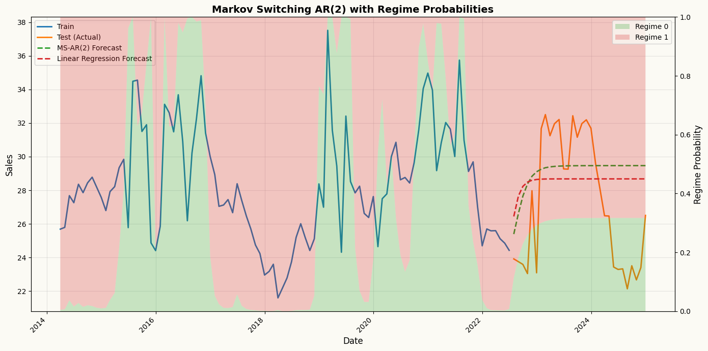
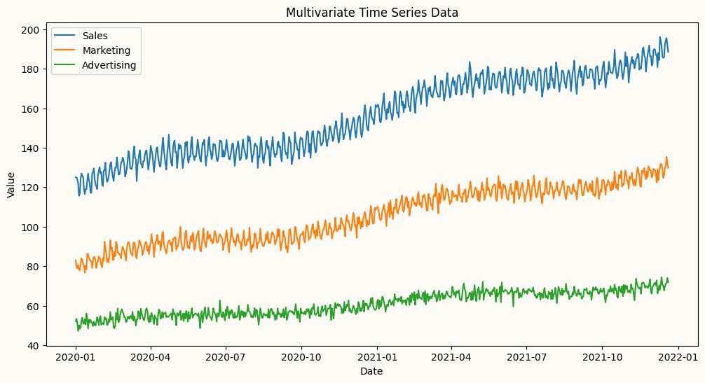
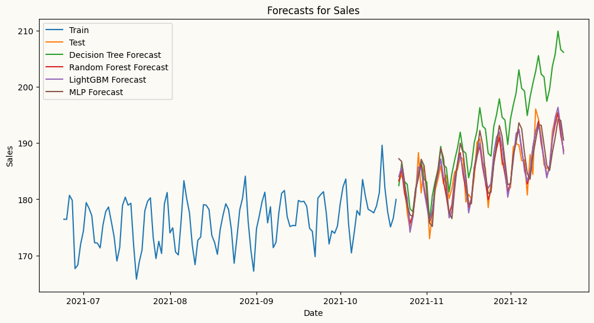
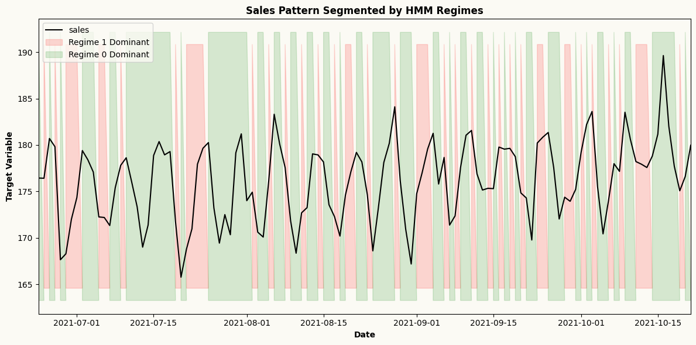

All models share a consistent interface — each accepts a target_col to specify the target series, along with any model-specific parameters. Fitting is done via .fit(df) and forecasting via .forecast(H). Exogenous variables, where supported, are passed at the forecasting step and aligned automatically. All models also expose .cross_validate() for evaluation, supporting both expanding and sliding window strategies with a configurable step size.
The table below summarises the available univariate forecasters, from simple baselines to statistical and machine learning models, along with a minimal usage example for each.
Models
Description
Usage Example
Naive Forecaster
A simple forecasting model that uses the last observed value or last seasonal value as the forecast.
from peshbeen.models import naive model = naive(target_col=‘target column name’, season_period=None) model.fit(df) forecasts = model.forecast(H=10)
ETS (Exponential Smoothing state space models)
ETS forecaster that wraps the statsmodels implementation, allowing for easy integration and forecasting.
from peshbeen.models import ets model = ets(target_col=‘target column name’, trend=‘add’, seasonal=‘add’, seasonal_periods=12, smoothing_level=0.1, smoothing_trend=0.1, smoothing_seasonal=0.1) model.fit(df) forecasts = model.forecast(H=10)
Auto ARIMA (Automatic Model Selection)
Automatic ARIMA model selection implementing the Hyndman-Khandakar (2008) stepwise algorithm and grid search, with repeated KPSS stationarity tests.
from peshbeen.models import auto_arima model = auto_arima(target_col=‘target column name’, seasonal_length=12, stepwise=True) model.fit(df) forecasts = model.forecast(H=10)
ARIMA (AutoRegressive Integrated Moving Average)
A fast, native forecaster built on vectorized NumPy and SciPy digital filtering (lfilter) with conditional sum-of-squares (CSS) and L-BFGS-B estimation.
from peshbeen.models import arima model = arima(target_col=‘target column name’, order=(1, 1, 1)) model.fit(df) forecasts = model.forecast(H=10)
Machine Learning Regressors — any scikit-learn-compatible regressor, from LinearRegression, RandomForest and AdaBoost to XGBoost, LightGBM, CatBoost and TabPFN.
A unified forecasting wrapper for any compatible regression model.
from peshbeen.models import ml_forecaster from sklearn.ensemble import RandomForestRegressor model = ml_forecaster(target_col=‘target column name’, model=RandomForestRegressor(n_estimators=100)) model.fit(df) forecasts = model.forecast(H=10)
Direct multi-step machine learning forecaster that trains an independent regressor for each step in horizon \(H\), avoiding recursive error accumulation.
from peshbeen.models import ml_direct_forecaster from lightgbm import LGBMRegressor model = ml_direct_forecaster(model=LGBMRegressor(), target_col=‘target column name’, H=10, lags=[1, 2, 7]) model.fit(df) forecasts = model.forecast(H=10)
Models time series with hidden regime changes (e.g. recession vs. growth, low vs. high volatility) using autoregressive dynamics and optional exogenous variables.
from peshbeen.models import ms_arr model = ms_arr(target_col=‘target column name’, n_components=2, lags = 2, n_iter=100) model.fit(df) forecasts = model.forecast(H=10)
GLM (Generalized Linear Models)
A statsmodels-backed generalization of linear regression that supports non-Gaussian response distributions — including Poisson for count data and Gamma for strictly positive, skewed data.
from peshbeen.models import glm import statsmodels.api as sm model = glm(target_col=‘target column name’, family=sm.families.Poisson(), lags=2) model.fit(df) forecasts = model.forecast(H=10)
Usage example
Regardless of whether you use ETS, ARIMA, a machine learning regressor, or any other supported model, the interface is consistent. The .forecast(H) method returns a consistent numpy array of forecasts, and the .cross_validate() method provides a standardized way to evaluate model performance across different time series and forecasting horizons.
Index of data: A DatetimeIndex (or RangeIndex) is required for all models to ensure proper time series handling and forecasting. The index is recommended to be at a regular frequency without any missing timestamps.
Target column: The target_col parameter specifies the name of the column in the input DataFrame that contains the time series to be forecasted.
Example usage for different models are provided in cells below, demonstrating how to fit and forecast with each model type using the same dataset and target column for consistency.
auto_arima automates ARIMA and SARIMA order selection using the Hyndman-Khandakar (2008) stepwise search algorithm and repeated KPSS stationarity tests. You can inspect the top candidate models with .top_models(n) and extract parameter dictionaries for any candidate rank using .get_orders(rank=k) or .best_orders.
from peshbeen.models import auto_arima# Stepwise automatic model selectionauto_model = auto_arima(target_col='passengers', seasonal_length=12, max_p=3, max_q=3, max_P=2, max_Q=2, stepwise=True)auto_model.fit(train_data)# Summary and top candidatesprint(auto_model.summary())print('\nTop 3 candidate models:')display(auto_model.top_models(3))# Multi-step out-of-sample forecastauto_forecast = auto_model.forecast(H=12)print('\nSelected Best Parameters:', auto_model.best_orders)
======================================================================================
Auto ARIMA Model Selection Summary
======================================================================================
Selection Algorithm: Hyndman-Khandakar Stepwise Search
Stationarity Test: KPSS (alpha = 0.05) -> d = 1
Selected Best Model: ARIMA(1,1,0) (0,1,0)[12]
Include Constant: False
Optimized Criterion: AICC = 900.7323
Information Criteria: AIC = 900.6289 | AICc = 900.7323 | BIC = 906.1871
Models Evaluated: 14 models
--------------------------------------------------------------------------------------
Best Model Parameter Estimates:
======================================================================================
Unified Peshbeen ARIMA Model Results: SARIMAX(1,1,0)x(0,1,0,12)
======================================================================================
No. Observations: 132 Log-Likelihood: -448.314 AIC: 900.629
Sigma^2: 109.5980 Fit Time (s): 0.0032 BIC: 906.187
======================================================================================
Parameter Estimate Std.Err t-stat P>|z| [0.025 0.975]
--------------------------------------------------------------------------------------
ar.L1 -0.2448 0.0901 -2.718 0.0066 ** [ -0.421 -0.068]
sigma2 109.5980
--------------------------------------------------------------------------------------
Signif. codes: 0 '***' 0.001 '**' 0.01 '*' 0.05 '.' 0.1 ' ' 1
======================================================================================
Top 3 candidate models:
Standard machine learning forecasters (ml_forecaster) use a recursive strategy: they predict horizon \(h=1\), append that prediction as a new lag, and step forward iteratively to predict \(h=2, 3, \dots, H\). While flexible, recursive forecasting can accumulate prediction errors over long horizons.
ml_direct_forecaster uses a direct multi-step strategy: it trains a dedicated regressor for each individual horizon step \(h \in \{1, \dots, H\}\). Each model is optimized specifically for its forecast lead time directly from observed historical features, preventing error compounding.
from peshbeen.models import ml_direct_forecasterfrom peshbeen.datasets import load_airline_passengersfrom lightgbm import LGBMRegressorpax = load_airline_passengers()pax_train = pax[:-12]pax_test = pax[-12:]# Direct forecaster: trains independent models, one per horizon step up to H=12direct_model = ml_direct_forecaster( model=LGBMRegressor(n_estimators=50, random_state=42, verbose=-1), target_col='passengers', H=12, lags=12)direct_model.fit(pax_train)direct_fc = direct_model.forecast(H=12)print("Direct ML forecasts (H=12):", direct_fc[:5])
Direct ML forecasts (H=12): [385.82705361 392.99494058 419.0278088 420.87151715 432.4001238 ]
Forecasting with TabPFN
TabPFN is a powerful transformer-based model designed for tabular data. ml_forecaster provides a wrapper to use TabPFN for time series forecasting by treating the problem as a regression task. Below is an example of how to use TabPFN for forecasting with the ml_forecaster wrapper.
Models like ARIMA or Random Forest assume the “rules” of a time series are constant. However, real-world data often undergoes structural shifts—moving between a high-volatility “crisis” mode and a stable “growth” mode.
While the models above assume a stable relationship over time, real-world data sometimes exhibits regime changes. Peshbeen includes native support for MS-ARR to model these “regime changes” (e.g., shifting from a high-volatility to a low-volatility state) explicitly. MS-ARR models capture these dynamics by allowing the time series to switch between different hidden regimes, each with its own autoregressive structure.
How it Works: The Hidden Dynamics
The AR-MSR model in peshbeen is defined by four core components:Regime-Dependent Dynamics: In each regime \(r\), the process follows a unique autoregressive structure:
\(y_t\) is the target variable at time \(t\), \(X_{tm}\) are optional exogenous variables, and \(\epsilon_t\) is the error term. The intercept (\(\beta_0\)), coefficients (\(\beta_i\)), and volatility (\(\sigma_r^2\)) all adapt to the specific regime.
Transition Probability Matrix (\(\mathbf{P}\)): The model learns the probability of moving from one regime to another. For a 2-regime model, the matrix \(\mathbf{P}\) looks like this:
where \(p_{ij}\) is the probability of transitioning from regime \(i\) to regime \(j\). This captures the “stickiness” of states (e.g., how likely a recession is to continue into the next period).
Estimation via EM (Expectation-Maximization) Algorithm: The model parameters are estimated using the EM algorithm, which iteratively refines estimates of the hidden states and the model parameters until convergence. Under the hood, peshbeen calculates the transition matrix and the filtered probabilities (the likelihood of being in a state at any given time) using the Baum-Welch algorithm. This uses a Forward-Backward pass to efficiently find the Maximum Likelihood Estimates (MLE) for the hidden Markov process.
The Markov Property: Transitions depend only on the current state, not the entire history. This allows the model to remain computationally efficient even as the complexity of the data increases.
Why use MS-ARR in Peshbeen?
Capture Non-Linearity: It models complex shifts that ARIMA or standard ML models might miss.
Regime Inference: Use model.predict_states() to see a historical timeline of when your series was likely in each regime. Use model.predict_proba() to get the probability of being in each regime at any point in time.
Adaptive Forecasting: The forecast accounts for the probability of a regime shift occurring during the forecast horizon \(H\).
## Create a sales series with regime switchesimport numpy as npimport pandas as pdnp.random.seed(42)n =300dates = pd.date_range(start="2000-01-01", periods=n, freq="ME")# Define hidden regimes (Regime 0 is "Stable", Regime 1 is "High")regime_switches = np.zeros(n)for i inrange(1, n):# Create persistent regimes (90% chance to stay in current state)if regime_switches[i-1] ==0: regime_switches[i] = np.random.choice([0, 1], p=[0.9, 0.1])else: regime_switches[i] = np.random.choice([0, 1], p=[0.2, 0.8])series = np.zeros(n)# Generate data with AR(1) logic based on the current regimefor t inrange(1, n):if regime_switches[t] ==0:# Regime 0: Low mean, high lag dependency series[t] =5+0.8* series[t-1] + np.random.normal(0, 1)else:# Regime 1: High mean, low lag dependency series[t] =25+0.2* series[t-1] + np.random.normal(0, 3)ms_data = pd.DataFrame({"sales": series}, index=dates)train_ms = ms_data.iloc[:-30]test_ms = ms_data.iloc[-30:]from peshbeen.models import ms_arrms_arr_model = ms_arr(target_col="sales", n_components=2, lags=2, add_constant=True, n_iter=50, tol=1e-4, random_state=42)ms_arr_model.fit(train_ms)ms_arr_forecast = ms_arr_model.forecast(H=30)regime_probs = ms_arr_model.predict_proba()## also create linear regression forecasts for comparisonfrom sklearn.linear_model import LinearRegressionlr_model = ml_forecaster(target_col="sales", model=LinearRegression(), lags=2)lr_model.fit(train_ms)lr_forecast = lr_model.forecast(H=30)import matplotlib.pyplot as pltfig, ax1 = plt.subplots(figsize=(14, 7))# Get regime probabilitiesregime_probs_train = ms_arr_model.predict_proba()# `forecast_forward` is populated by the .forecast(H) call above: an (n_regimes, H) array of# regime probabilities over the forecast horizon. Row 0 -> Regime 0, row 1 -> Regime 1.regime_probs_forecast = ms_arr_model.forecast_forward# No lag offset needed - already aligned with full training data!n_train_tail =100# Get tail of training data and regime probstrain_dates_tail = train_ms.index[-n_train_tail:]train_sales_tail = train_ms["sales"].values[-n_train_tail:]regime_probs_tail = [regime_probs_train[0][-n_train_tail:], regime_probs_train[1][-n_train_tail:]]# Combine with forecastdates_full =list(train_dates_tail) +list(test_ms.index)regime_probs_full = [np.concatenate([regime_probs_tail[0], regime_probs_forecast[0]]), np.concatenate([regime_probs_tail[1], regime_probs_forecast[1]])]# Plot the time series on primary axisax1.plot(train_dates_tail, train_sales_tail, label="Train", color="C0", linewidth=2)ax1.plot(test_ms.index, test_ms["sales"], label="Test (Actual)", color="C1", linewidth=2)ax1.plot(test_ms.index, ms_arr_forecast, label="MS-AR(2) Forecast", color="C2", linestyle='--', linewidth=2)ax1.plot(test_ms.index, lr_forecast, label="Linear Regression Forecast", color="C3", linestyle='--', linewidth=2)ax1.set_ylabel("Sales", fontsize=12)ax1.set_xlabel("Date", fontsize=12)ax1.legend(loc="upper left", fontsize=10)ax1.grid(True, alpha=0.3)# Overlay regime probabilities as stacked areaax2 = ax1.twinx()ax2.stackplot(dates_full, regime_probs_full[0], regime_probs_full[1], labels=['Regime 0', 'Regime 1'], alpha=0.25, colors=['C2', 'C3'])ax2.set_ylabel("Regime Probability", fontsize=12)ax2.set_ylim(0, 1)ax2.legend(loc="upper right", fontsize=10)plt.title("Markov Switching AR(2) with Regime Probabilities", fontsize=14, fontweight='bold')plt.setp(ax1.get_xticklabels(), rotation=45, ha="right")plt.tight_layout()plt.show()

Forecasting count data with a GLM (Poisson)
For non-negative count series — hospital admissions, call volumes, demand — a Poisson (or Gamma) GLM is often a better fit than a Gaussian model. peshbeen’s glm wraps statsmodels and takes a familyobject (not a string), e.g. sm.families.Poisson() for counts or sm.families.Gamma() for strictly positive, skewed data. It supports the same lags / difference / trend / box_cox interface as the other models, and exposes information criteria (.aic, .bic, .hqc) for model comparison.
from peshbeen.models import glmimport statsmodels.api as smimport matplotlib.pyplot as pltimport pandas as pd## generate a counted series with calendar effects and lags, to demonstrate Poisson GLMdf_count = pd.DataFrame({"count": np.random.poisson(lam=10, size=200)}, index=pd.date_range(start="2020-01-01", periods=200, freq="D"))df_count["day_of_week"] = df_count.index.dayofweekdf_count["month"] = df_count.index.monthglm_cat = ["day_of_week", "month"]# daily emergency-admission counts in Walesglm_cat = ["day_of_week", "month"]glm_train = df_count.iloc[:-30]glm_test = df_count.iloc[-30:]from sklearn.preprocessing import OneHotEncoderohe = OneHotEncoder(drop='first', sparse_output=False, handle_unknown="ignore")# Poisson GLM for count data, with weekly lags and calendar featurespoisson_model = glm(family=sm.families.Poisson(), target_col="count", lags=6, cat_variables=glm_cat, categorical_encoder=ohe)poisson_model.fit(df_count)poisson_forecast = poisson_model.forecast(H=30, exog=df_count[glm_cat])plt.figure(figsize=(12, 6))plt.plot(df_count.index[-90:], df_count["count"][-90:], label="Train")plt.plot(df_count.index[-30:], df_count["count"][-30:], label="Test")plt.plot(df_count.index[-30:], poisson_forecast, label="Poisson GLM Forecast")plt.title("Poisson GLM forecast of daily counts")plt.xlabel("Date")plt.ylabel("Counts")plt.legend()plt.show()
pesh combines several fitted models behind the same .fit / .forecast interface. The combination weights can be equal (weighting_scheme=None), user-specified (a dict that sums to 1), or optimised to minimise a chosen metric. To optimise the weights, call cross_validate(..., weighting_scheme="optimize") — the optimal weights are then stored in self.optimal_weights_ and can be passed back into a new pesh instance. forecast(H) returns a DataFrame with one column per member model plus a combined "pesh" column.
from peshbeen.models import ets, arima, ml_forecaster, peshfrom peshbeen.datasets import load_airline_passengersfrom peshbeen.metrics import RMSEfrom lightgbm import LGBMRegressorpax = load_airline_passengers()pesh_train = pax[:-12]pesh_test = pax[-12:]# build the member models (note: ml_forecaster uses model=, not estimator=)members = {"ets": ets(target_col="passengers", seasonal="additive", trend="additive", seasonal_periods=12, smoothing_level=0.5, smoothing_trend=0.5, smoothing_seasonal=0.5),"arima": arima(target_col="passengers", order=(1, 1, 1), seasonal_order=(1, 1, 1), seasonal_length=12),"lgbm": ml_forecaster(target_col="passengers", model=LGBMRegressor(n_estimators=100, random_state=42, verbose=-1), difference=1, lags=12),}# 1) optimise the ensemble weights via cross-validation, then read them backweight_finder = pesh(models={k: m.copy() for k, m in members.items()})cv_results = weight_finder.cross_validate(df=pesh_train, cv_split=3, test_size=12, metrics=[RMSE], weighting_scheme="optimize")opt_weights = weight_finder.optimal_weights_# optimal_weights_ also contains a "pesh" key for the combined column; keep only member weightsopt_weights = {k: v for k, v in opt_weights.items() if k in members}print("Optimised weights:", opt_weights)# 2) fit a fresh ensemble with the optimised weights and forecastensemble = pesh(models=members, weighting_scheme=opt_weights)ensemble.fit(pesh_train)ensemble_forecast = ensemble.forecast(H=12) # DataFrame: one column per model + 'pesh'import matplotlib.pyplot as pltplt.figure(figsize=(12, 6))plt.plot(pesh_train.index[-36:], pesh_train["passengers"][-36:], label="Train")plt.plot(pesh_test.index, pesh_test["passengers"], label="Test")plt.plot(pesh_test.index, ensemble_forecast["pesh"], label="pesh ensemble", linewidth=2)for name in members: plt.plot(pesh_test.index, ensemble_forecast[name], linestyle="--", alpha=0.6, label=name)plt.title("Weighted ensemble (pesh) vs. its members")plt.xlabel("Date")plt.ylabel("Passengers")plt.legend()plt.show()
Data format: Expect wide format data — a DataFrame where each column is an endogenous target series (target_cols = ['series_1', 'series_2', ...]) sharing identical timestamps on a common DatetimeIndex.
Mechanism: Model simultaneous feedback, cross-variable lag interactions, and joint system dynamics where past values of series A directly inform series B and vice versa.
Trade-offs: Highly effective for capturing rich feedback loops between a small-to-moderate set of interdependent series (e.g., price and demand, interest rate and inflation). However, because feature dimensionality scales with \(K \times L\) (number of series \(\times\) lags), wide models are not intended for scaling to hundreds or thousands of series.
Wide machine learning forecaster supporting multi-output regressors (e.g. RandomForestRegressor, MultiOutputRegressor(LGBMRegressor())) across multiple target series with automatic lag and transformation engineering.
from peshbeen.models import ml_multi_output_forecaster model = ml_multi_output_forecaster(RandomForestRegressor(), target_cols=[‘interest’, ‘inflation’], lags=4) model.fit(df) fc = model.forecast(H=12)
When forecasting multiple interconnected economic or operational series stored in wide format (such as interest rates and inflation), ml_multi_output_forecaster uses multi-target regressors (such as RandomForestRegressor, LinearRegression, or MultiOutputRegressor(LGBMRegressor())) to predict all series jointly from shared cross-series lags:
Example for multivariate forecasting works using the VAR model.
Peshbeen’s VAR model allows you to specify different lag structures for each target series, enabling you to capture the unique temporal dependencies of each series while modeling their interdependencies. Different than the implementation of the standard VAR in statsmodels, which applies the same lag structure to all series, Peshbeen’s VAR can have, for example, one series with 2 lags and another with 1, 2, and 7 lags. This flexibility allows user to tailor the model to the specific characteristics of each series, improving forecasting performance.
import numpy as npimport pandas as pdimport matplotlib.pyplot as plt## Create a multivariate autoregressive sales data with 3 features: sales, marketing spend, and advertising spend to show if we can capture the relationships between past values of all three features to forecast the future values of sales. date_range = pd.date_range(start='2020-01-01', periods=720, freq='D')np.random.seed(42)doy = date_range.dayofyear.to_numpy() # force NumPy, not pandas Indexdata1 =120+0.1* np.arange(720) +5* np.sin(2* np.pi * doy /7) +6* np.sin(2* np.pi * doy /365) + np.random.normal(0, 2, 720)data2 =80+0.07* np.arange(720) +3* np.sin(2* np.pi * doy /7) +4* np.sin(2* np.pi * doy /365) + np.random.normal(0, 2, 720)data3 =50+0.03* np.arange(720) +1* np.sin(2* np.pi * doy /7) +2* np.sin(2* np.pi * doy /365) + np.random.normal(0, 2, 720)# create a multivariate datasetmultivariate_data = pd.DataFrame({'sales': data1, 'marketing': data2, 'advertising': data3}, index=date_range)## add the day of week and month as categorical variables to the multivariate datasetmultivariate_data["day_of_week"] = multivariate_data.index.dayofweekmultivariate_data["month"] = multivariate_data.index.month# plot the multivariate dataplt.figure(figsize=(12, 6))plt.plot(multivariate_data.index, multivariate_data['sales'], label='Sales')plt.plot(multivariate_data.index, multivariate_data['marketing'], label='Marketing')plt.plot(multivariate_data.index, multivariate_data['advertising'], label='Advertising')plt.title('Multivariate Time Series Data')plt.xlabel('Date')plt.ylabel('Value')plt.legend()plt.show()

from peshbeen.models import var#split the data into train and test sets mv_train_data = multivariate_data.iloc[:-60]mv_test_data = multivariate_data.iloc[-60:]from sklearn.preprocessing import OneHotEncoderohe = OneHotEncoder(drop='first', sparse_output=False, handle_unknown="ignore")cat_variables = ["day_of_week", "month"]# we can specify different lag structures for each target series, enabling us to capture the unique temporal dependencies of each series while modeling their interdependencies.# This flexibility allows user to tailor the model to the relationships between the series, improving forecasting performance.var_model =var(target_cols=['sales', 'marketing', 'advertising'], lags={'sales': 7, 'marketing': [1, 7], 'advertising': 5}, cat_variables=['day_of_week', 'month'], categorical_encoder=ohe)var_model.fit(mv_train_data)var_forecasts = var_model.forecast(H=60, exog=mv_test_data[['day_of_week', 'month']])
# plot the forecasts and the actual values for salesplt.figure(figsize=(12, 6))plt.plot(mv_train_data.index[-120:], mv_train_data['sales'][-120:], label='Train')plt.plot(mv_test_data.index, mv_test_data['sales'], label='Test')plt.plot(mv_test_data.index, var_forecasts['sales'], label='VAR Forecast')plt.title('VAR Forecast for Sales')plt.xlabel('Date')plt.ylabel('Sales')plt.legend()plt.show()

Example for regime-switching multivariate forecasting using the MS-VAR model.
ms_var is the multivariate extension of ms_arr: it models several series jointly with vector-autoregressive dynamics while allowing the whole system to switch between a small number of hidden regimes (e.g. a calm regime and a volatile one). Like var, it accepts a per-series lag dictionary, so each target can have its own lag structure. After fitting you can inspect the inferred regimes with predict_states() (most-likely regime per timestep) and predict_proba() (full posterior over regimes), and read off information criteria via .aic, .bic, and .hqc.
We reuse the mv_train_data / mv_test_data split from the VAR example above.
from peshbeen.models import ms_var# Two hidden regimes; per-series lag structure as with var.msvar_model = ms_var( n_components=2, target_cols=['sales', 'marketing', 'advertising'], lags={'sales': 7, 'marketing': [1, 7], 'advertising': 5}, cat_variables=['day_of_week', 'month'], categorical_encoder=ohe, n_iter=100, random_state=123,)msvar_model.fit(mv_train_data)# forecast() returns a dict keyed by target column name (each value a length-H array)msvar_forecasts = msvar_model.forecast(H=60, exog=mv_test_data[['day_of_week', 'month']])print("Forecast keys:", list(msvar_forecasts.keys()))print("AIC: {:.1f} | BIC: {:.1f}".format(msvar_model.aic, msvar_model.bic))
# Inspect the inferred regimes over the training period.states = msvar_model.predict_states() # most-likely regime at each in-sample timestepproba = msvar_model.predict_proba() # full posterior, shape (n_components, T)fig, ax = plt.subplots(figsize=(12, 6))# 1. Plot the FULL target variableax.plot(mv_train_data.index[-120:], mv_train_data[-120:]["sales"], label='sales', color='black', linewidth=1.5)is_regime_1 = proba[0][-120:] >=0.5is_regime_0 =~is_regime_1# 3. Apply background shading using fill_betweenax.fill_between( mv_train_data.index[-120:], ax.get_ylim()[0], ax.get_ylim()[1], where=is_regime_1, color='red', alpha=0.15, label='Regime 1 Dominant', interpolate=True)ax.fill_between( mv_train_data.index[-120:], ax.get_ylim()[0], ax.get_ylim()[1], where=is_regime_0, color='green', alpha=0.15, label='Regime 0 Dominant', interpolate=True)# 4. Formattingax.set_xlabel('Date', fontweight='bold')ax.set_ylabel('Target Variable', fontweight='bold')ax.set_title('Sales Pattern Segmented by HMM Regimes', fontweight='bold')ax.legend(loc='upper left', frameon=True)ax.margins(x=0) plt.tight_layout()plt.show()

Multi-series forecasters
Multi-series forecasters train global machine learning models across collections of many individual time series (e.g. sales across 100 stores, demand for 1,000 SKUs, or patient admissions across multiple hospital wards) sharing a common schema indexed by an entity ID (id_col).
How it works: Generates standard lag features (lag_1, lag_2, \dots) for each series independently, then vertically pools all samples into a single training table.
Potential advantages: Highly scalable to thousands of series; pools statistical power across related series (which helps prevent overfitting on short series); efficient memory footprint; handles cold-start series at inference time without architectural changes.
Considerations: Does not directly incorporate the historical lags of series A as input features to predict series B.
How it works: Extends multi-series pooling by capturing cross-series lag interdependencies across series, allowing one series’ temporal history to directly inform another’s forecast.
Potential advantages: Captures cross-series influences and substitution or complementary effects in multi-series collections.
Considerations: Requires aligning series across time, increasing feature dimensionality and training cost compared to independent panel pooling.
In many practical settings — such as retail inventory, logistics, or healthcare operations — you need to forecast hundreds or thousands of distinct series simultaneously. Rather than fitting thousands of individual univariate models, panel_forecaster trains a unified global regressor across all series.
Here we use load_sales() to forecast multiple store-item series simultaneously:
from peshbeen.datasets import load_salesfrom peshbeen.models import panel_forecasterfrom lightgbm import LGBMRegressorimport matplotlib.pyplot as plt# Load multi-series sales datasetdf = load_sales()# Select 3 store-item series for demonstrationstores = ['store_01_item_01', 'store_01_item_02', 'store_01_item_03']df_sub = df[df['store_item'].isin(stores)].copy()# Split train and test temporally across all seriestrain = df_sub[df_sub.index <='2025-12-31']test = df_sub[df_sub.index >='2026-01-01']H =14# Initialize global panel forecasterpanel_model = panel_forecaster( model=LGBMRegressor(n_estimators=50, random_state=42, verbose=-1), id_col='store_item', target_col='sales', lags=[1, 7, 14])# Fit on historical panel datapanel_model.fit(train)# Generate forecasts for all seriespanel_forecasts = panel_model.forecast(H=H)# Plot actuals vs. panel forecasts for each seriesfig, axes = plt.subplots(len(stores), 1, figsize=(12, 8), sharex=True)for i, s inenumerate(stores): s_train = train[train['store_item'] == s] s_test = test[test['store_item'] == s].iloc[:H] axes[i].plot(s_train.index[-60:], s_train['sales'][-60:], label='Train History', color='#2b5c8f') axes[i].plot(s_test.index, s_test['sales'], label='Actual', color='black', linewidth=1.5) axes[i].plot(s_test.index, panel_forecasts[s], label='Panel Forecast', color='crimson', linestyle='--', linewidth=1.8) axes[i].set_title(f'Series: {s}', fontsize=11, fontweight='bold') axes[i].set_ylabel('Sales') axes[i].legend(loc='upper left')plt.xlabel('Date')plt.suptitle('Global Multi-Series Forecasting with panel_forecaster', fontsize=13, fontweight='bold')plt.tight_layout()plt.show()
When individual series in a panel exhibit cross-series influence or require per-series lag specifications alongside pooled training, ml_multi_forecaster extends panel forecasting with cross-series dependency capabilities. It shares the same .fit(df) and .forecast(H) interface:
from peshbeen.models import ml_multi_forecastermulti_model = ml_multi_forecaster( model=LGBMRegressor(n_estimators=50, random_state=42, verbose=-1), id_col='store_item', target_col='sales', lags=[1, 7, 14])multi_model.fit(train)multi_forecasts = multi_model.forecast(H=H)print("Forecasted series:", list(multi_forecasts.keys()))for s in stores:print(f"{s} first 3 forecasts: {multi_forecasts[s][:3].round(2)}")
Forecasted series: ['store_01_item_01', 'store_01_item_02', 'store_01_item_03']
store_01_item_01 first 3 forecasts: [93.33 93.5 91.56]
store_01_item_02 first 3 forecasts: [127.91 130.09 127.87]
store_01_item_03 first 3 forecasts: [71.17 73.1 74.07]